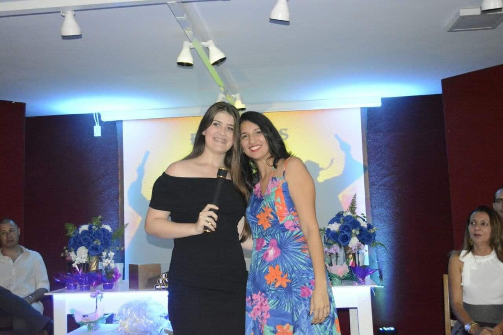
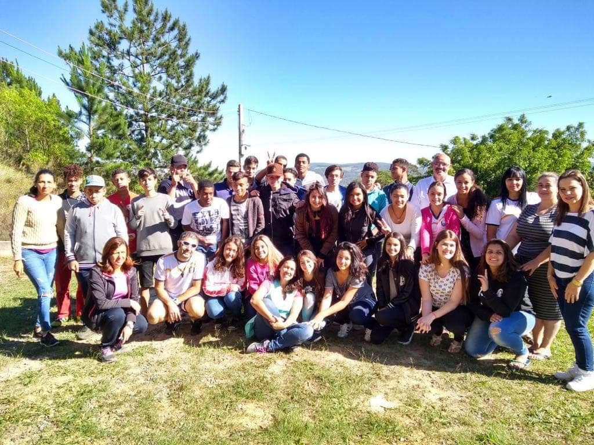

Desde de muito cedo, assim como muitas crianças, fui colocada no jardim de infância com 5 anos, onde pude começar aprender e me desenvolver como aluna, os anos foram se passando e eu fui crescendo e as series e deveres mudando. Assim passei pelo Ensino Fundamental, na mesma escola onde cresci ( E.M Felipe Lutfalla), me formei no 9° ano com 15 anos, no ano de 2017.
 No ano seguinte, junto da adolecência tive que mudar de escola, onde passei maior parte da minha vida, para uma escola nova e cheia de novos amigos, na (E.E Estação Dona Catarina) pude aprender novas materias, e me desenvolver mais como pessoa, foi onde eu conclui com 18 anos o famoso "Terceirão" no meio da pandemia do covid, por meio do EAD, dando assim o fim do meu Ensino Médio. E assim, escrevo hoje dentro do meu trabalho da faculdade, que estou tendo o prazer de ter um curso superior, e que em breve estarei formada em Analise e Desenvolvimento de Sistemas, pela UNINTER.